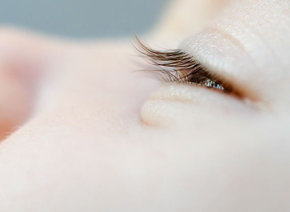
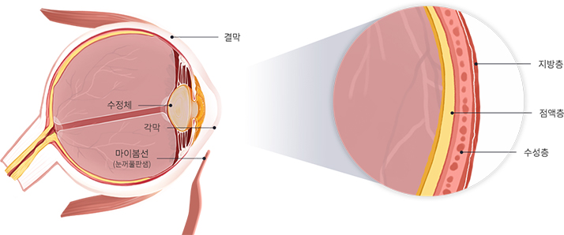
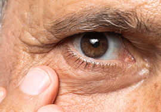

단순한 뻑뻑함을 넘어 각막 상처와 혼탁을 막기 위해
눈물층의 기능을 회복하는 적극적인 관리가 필요

안구건조증은 눈 표면을 감싸고 있는 눈물층의 기능저하로
안구가 보호받지 못하여 발생하는 질환입니다.
심한 안구건조증은 각막 상처와 혼탁으로 영구적인 시력
저하를 유발할 수 있으므로 적극적인 치료와 관리가
이루어져야 합니다.
눈물층의 균형이 깨지면서 안구건조증이 발생합니다.

눈 표면은 수분을 유지하는
눈물막으로 덮여 있습니다.
눈물층 가장 바깥쪽의 지방층은
눈물의 증발을 막고 눈물막을
안정시켜 수분을 유지하는
역할을 합니다.
눈물막 구성 성분 중
하나라도 부족하면
눈물막이 불안정해져
눈이 쉽게 건조해집니다.
미세한 기름샘 입구가 막혀
기름 배출이 줄어들면
안구건조증이 발생하기
쉽습니다.
냉난방기 사용이나 잦은
전자기기 작업으로
눈 깜빡임 횟수가
줄어들 때 발생합니다.

노화로 인해 눈물 분비량이
감소하고 눈물의 상태가
변하면서 건조 증상이
나타납니다.
아래 항목들을 체크해보세요.

월 화 목 금
am 09:00 ~ pm 06:00토 요 일
am 09:00 ~ pm 04:00점 심 시 간
pm 01:00 ~ pm 02:00수요일, 일요일, 공휴일 휴무입니다.
공휴일 있는 주는 수요일 대체진료입니다.